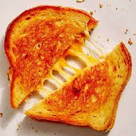

Grilled Cheese Sandwich

Embark on a journey of comfort and flavor with a grilled cheese
sandwich, as perfectly melted cheese embraces the golden-brown, buttery
crispness of the bread, resulting in a simple yet heavenly culinary
experience.
Ingredients
- Bread Slices
- Butter
- Cheese slices
Instructions
- Heat a non-stick skillet or griddle over medium heat.
- Butter one side of each bread slice.
- Place a slice of cheese between two slices of bread with the buttered side facing out.
- Place the sandwich on the preheated skillet and cook for 2-3 minutes on each side or until the bread turns
golden brown, and the cheese melts to your liking.
- Press down on the sandwich gently with a spatula to help the cheese melt evenly.
- Once both sides are golden brown and the cheese is melted, remove the grilled cheese sandwich from the
skillet.
- Allow it to cool for a moment before slicing, and serve immediately.